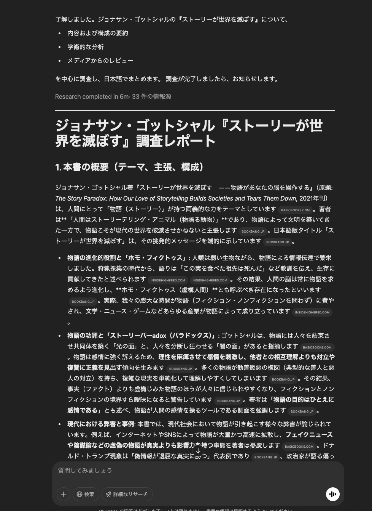
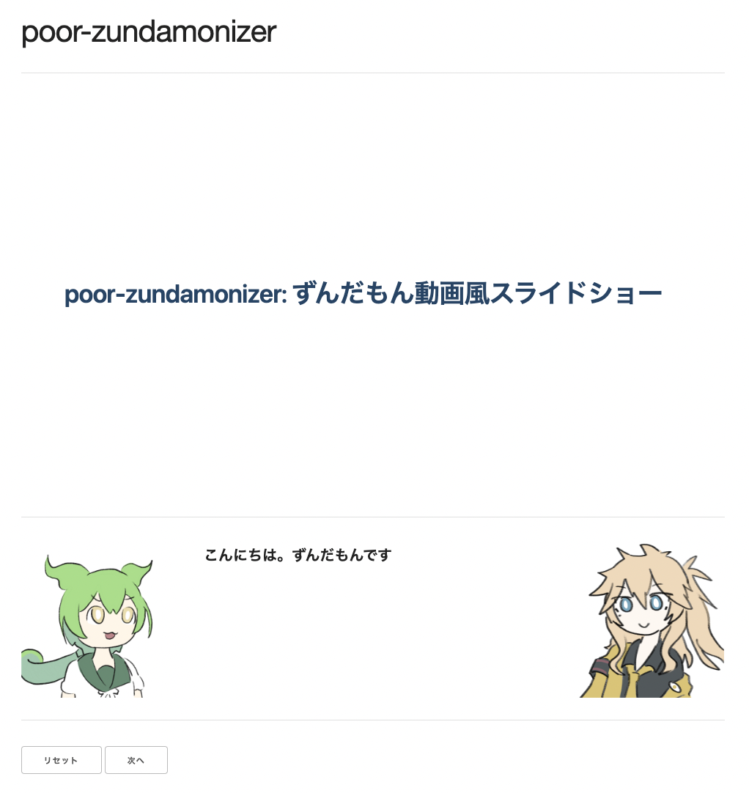

poor-zundamonizer: ずんだもん動画風スライドショー モチベーション DeppResearch の文章を読むのすら面倒くさい。 こんなこと言ってごめんなさい。でも本音です。 ほしいもの ずんだもん動画になってくれんか。 バカな人間ですまん ほしいもの詳細 ずんだもん動画っていうか、 画面に簡潔に情報がまとまっている 詳細な情報が別枠で追加される というのを期待しているかも。 自分のやりたいことがわかる賢い人間でよかった〜 ほしいもの設計案 こう言われる  こうする ## おいしいカレーの作り方 - 材料 - 牛肉 - 玉ねぎ - にんじん - パスタ <!-- ずんだもん(neutral): ずんだもんだぜ！ --> こうなる  利用ツール DeppResearch 人工知能が調べ物して 天然無能に教えてくれる すごいやつだ Marp スライドプレゼンを Markdown で書ける すごいやつだ VOICEVOX 文章を元に 音声を生成してくれる すごいやつだ ずんだもナイザが使う部分 DeppResearch 人工知能が調べ物して 天然無能に教えてくれる すごいやつだ Marp スライドプレゼンを Markdown で書ける すごいやつだ VOICEVOX 文章を元に 音声を生成してくれる すごいやつだ ずんだもナイザの利用 $ bun run index.ts <入力Markdownファイル> <出力ディレクトリ> 出力ディレクトリ内の zundamonized.html を開く。 ずんだもナイザがやること Marp で Markdown を解釈し、HTML / CSS / コメントを取得 コメントを元に以下をやる: 音声ファイルの生成 プレゼンテーション再生時のイベント生成 HTML / CSS / イベントを元にスライドショー用のページを生成 ずんだもナイザがやることの詳細: コメントの処理 const { html, css, comments } = marp.render(` ## おいしいカレーの作り方 カレーを作ろう <!-- ずんだもん(neutral): ずんだもんだぜ！ --> <!-- 春日部つむぎ(neutral): カレーよりタコライスがすき、春日部つむぎです --> --- ## おいしいタコライスの作り方 カレーを作るのをやめよう <!-- ずんだもん(happy): おいしいタコライスを作ろう --> <!-- 春日部つむぎ(neutral): タコライスが好きとは言ったが、食べたいとは言っていない --> <!-- ずんだもん(angry): お死になさい --> `); // comments: [ // ["ずんだもん(neutral): ずんだもんだぜ！", "春日部つむぎ(neutral): カレーよりタコライスがすき、春日部つむぎです"], // ["... コメントが続く ..."], // ] まとめ 大したことをしていないので、 お好きに変更を加えてよしなに使ってね